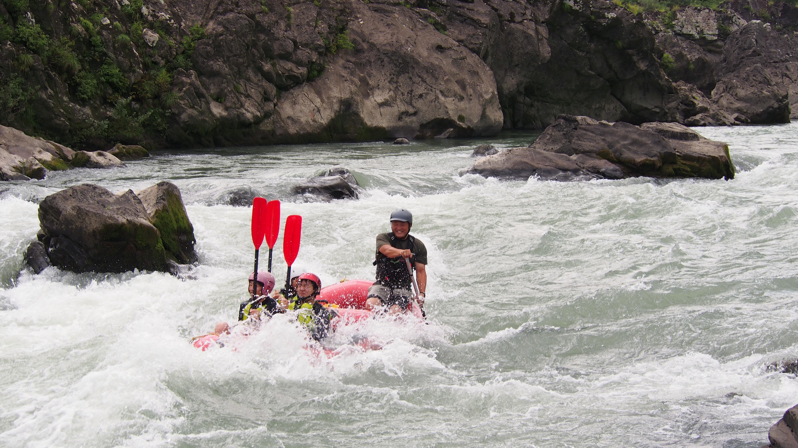
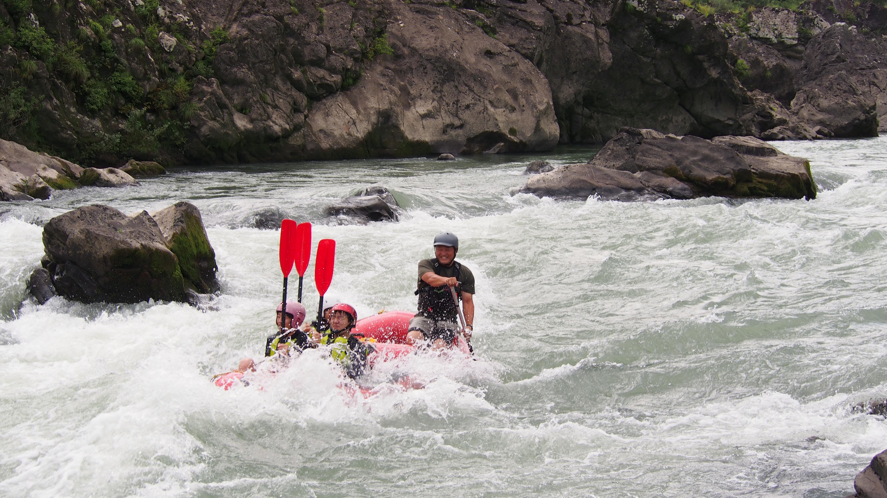
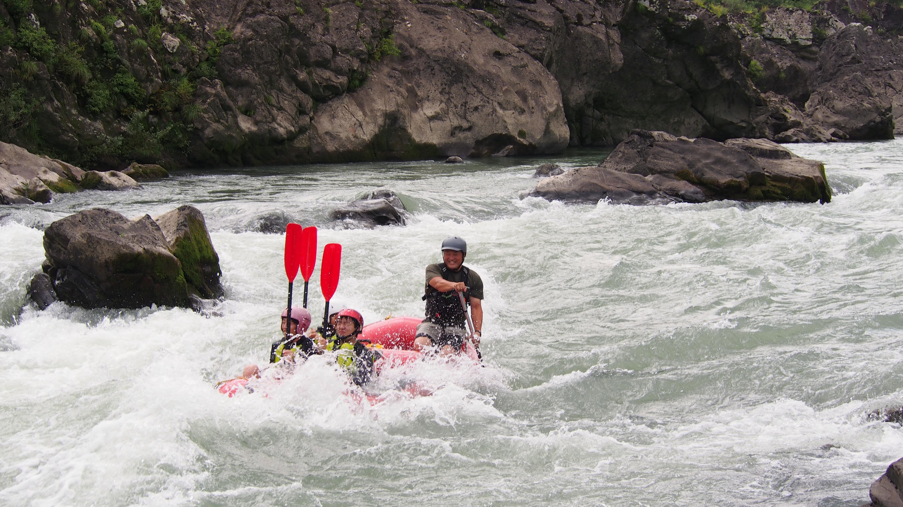
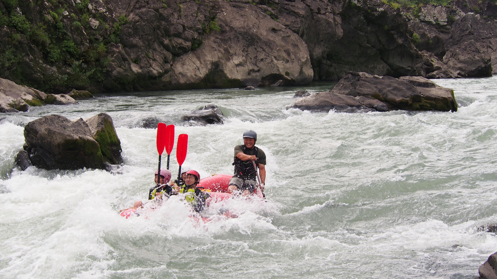
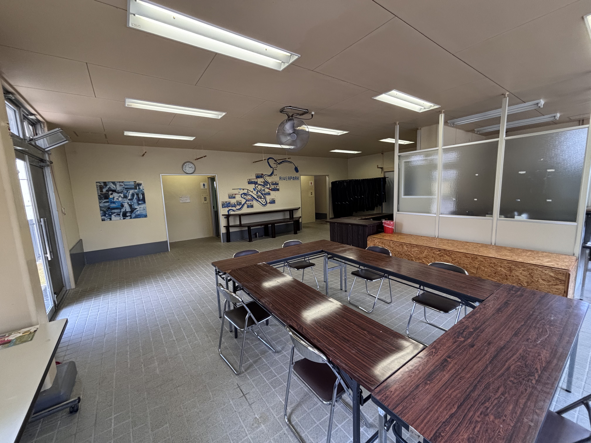

 

那賀川の清流を下るスリリングなラフティング体験！初心者から上級者まで楽しめるコースをご用意。経験豊富なガイドが安全にサポートします。
スタンドアップパドル（SUP）や軽量なパックラフトで、ゆったりとした川下りや冒険をお楽しみいただけます。詳細は2026年春に発表予定！
1人：6,000円～
(大人・子ども関係なし)
所要時間：約3時間
含まれるもの：装備一式、ガイド料、保険
追加オプション：
ツアー中の写真（別売り）：1,000円
シューズレンタル：300円
※料金は税込です。1日コースは現在検討中です。詳細なスケジュールやキャンセルポリシーは予約ページでご確認ください。
受付場所に集合（集合時間は予約時に確認）。必要な持ち物（水着、タオル、着替え、濡れても良い靴）の確認後、参加承諾書の記入を行い、更衣室で着替えをします。スタッフがサポートいたします。
こちらの車でスタートポイントへ約10分で移動。道中、那賀川の美しい自然や川の風景お楽しみいただけます。移動中もガイドがツアーの概要を説明します。

河原に到着後、ガイドがラフティングの注意点や操船の基本を説明。ライフジャケットやヘルメットの正しい着用方法を指導し、参加者からの質問にもお答えします。安全第一で進めます。

ボートに乗り込んでラフティングに出発！ガイドが常にサポートしながら、激流や穏やかな流れを満喫。安全なエリアでは写真撮影のチャンスも。アドレナリン全開の体験をお楽しみください！

水着、タオル、着替え、濡れても良い靴（ビーチサンダル不可）をご持参ください。装備（ヘルメット、ライフジャケット）はこちらで用意します。
7日前までのキャンセルは無料、7～4日前までは30%、3～1日前までは50%、それ以降は100%のキャンセル料がかかります。詳細は予約時にご確認ください。
もちろんです！初心者向けのコースがあり、経験豊富なガイドが丁寧に指導します。安全第一で楽しい体験をお約束します。
4歳以上のお子様は保護者同伴で参加可能です。コースは年齢に応じて調整しますので、詳細はお問い合わせください。
徳島県内のラフティング拠点へのアクセス情報をご案内します。
住所：〒771-5203 徳島県那賀郡那賀町和食郷田野１０５−１
アクセス：徳島市内から車で約1時間
駐車場：専用駐車場あり（無料、3台）